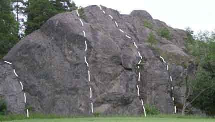

GPS: 59.07246111,17.60524444
Kategori:Södermanland
Liten klippa nära Järna med ett par leder. Omnämns i Stockholmsföraren 1996 som "Håknäs".
Sväng av motorvägen vid Järna trafikplats. Åk landsvägen söderut under motorvägen, för att sedan åka mot Vagnhärad på gamla Riksettan. Passera infarten till Saltå kvarn och skylten Pilkrog. Efter ett par hundra meter uppenbarar sig klippan på åkern på vänster sida av vägen.
Parkera förståndigt på små avtagsvägar i närheten eller liknande. Åkern som klippan ligger på är ibland odlad. Ta hänsyn till detta och kör aldrig bil till själva klippan även om det är stubbåker e d. Markägaren är positiv till klättring, men förtjänar vederbörlig hänsyn!
Det finns ett par tydliga leder, varav en är rapporterad och bultad. Övriga leder har klättrats men förstebestigare okänd. "Ankare" över båda lederna i mitten, dubbla kembultar resp singelbult med ring.
Copyright (C) Permission is granted to copy, distribute and/or modify this document under the terms of the GNU Free Documentation License, Version 1.3